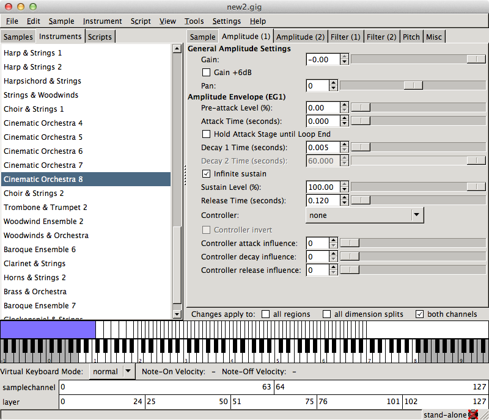

 Gigedit is a graphical instrument editor for sample based virtual instruments, based on the GigaStudio/Gigasampler file format. The GigaStudio/Gigasampler (.gig) file format is one of the major sampler formats supported by LinuxSampler and hence you can use Gigedit both as stand-alone instrument editor, or in conjunction with LinuxSampler for editing such instruments "live" while playing them with the sampler.
So far, the only topic covered by this new manual is managing real-time instrument scripts with Gigedit.